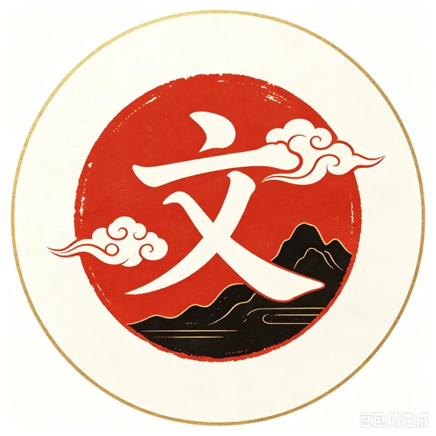

A JOURNEY IN ENGINEERING · 2010—未来
在技术浪潮里，
持续构建价值。
从第一行业务代码，到高并发基础设施，再到能够理解与行动的 Agent。用一条时间轴，记录工程能力如何在真实问题中生长。
16 年工程实践
07 + ?职业阶段 · 新篇待启
01持续演进的主线
企业应用 → 数据与通信 → 广告基础设施 → AI Agent
把复杂系统，变成可靠、可用的业务能力。
2010 / 起点公开脱敏版 · 向右探索职业历程 →2026.12 / 下一章

且听风吟从第一行业务代码，到高并发基础设施，再到能够理解与行动的 Agent。用一条时间轴，记录工程能力如何在真实问题中生长。
企业应用 → 数据与通信 → 广告基础设施 → AI Agent
把复杂系统，变成可靠、可用的业务能力。